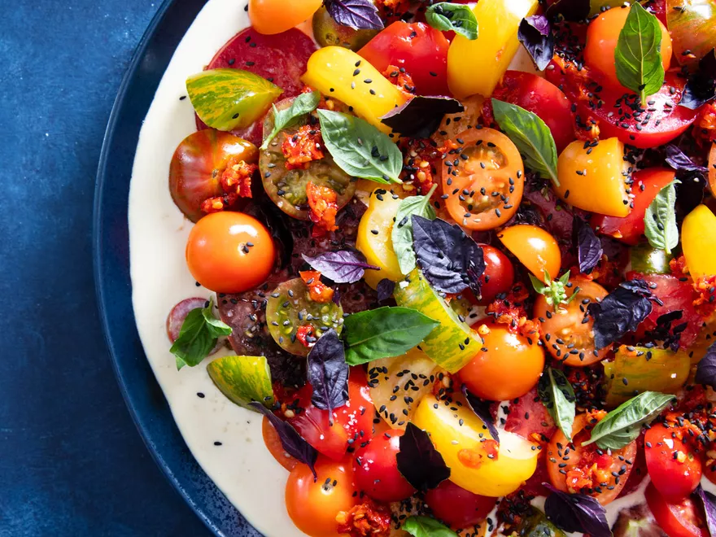

SUMMER TOMATO TONNATO SALAD

Italian tonnato sauce makes a nicely creamy accompaniment to peak summer tomatoes in this simple no-cook salad.
INGREDIENTS
For the Tonnato
- 1 large egg
- 1/4 cup (60ml) fresh lemon juice (from 2 whole lemons), divided
- 2 anchovy fillets (about 1/4 ounce; 7g)
- 1 teaspoon (5ml) Dijon mustard
- 1 teaspoon (5g) capers, drained
- 1/2 cup (120ml) vegetable oil
- 4 ounces (113g) oil-packed tuna, such as Ortiz, drained
- 1/2 cup (120ml) extra virgin olive oil
- Kosher salt and freshly ground black pepper
For the Salad
- 2 pounds (900g) mixed ripe tomatoes
- 2 tablespoons (30g) chopped Calabrian chilies
- Toasted black sesame seeds and coarse sea salt, for serving (optional)
- 15 to 20 fresh basil leaves, large leaves torn and small leaves left whole
INSTRUCTIONS
- For the Tonnato: Place egg, 2 tablespoons (30ml) lemon juice, anchovies, mustard, and capers in the bottom of an immersion blender cup or another tall-sided container that just fits the head of your immersion blender. Pour vegetable oil on top and allow to settle for 15 seconds. Place head of immersion blender at bottom of cup and turn it on high speed. Do not pulse or move the head. As mayonnaise forms, slowly tilt and lift the head of the immersion blender until all oil is emulsified; this should take between 30 and 45 seconds.
- Turn off blender and remove from blender cup. Scrape down sides of cup using a rubber spatula, then add tuna and remaining 2 tablespoons (30ml) lemon juice. Return blender head to blender cup and blend just until tuna is thoroughly incorporated into a smooth sauce, 15 to 30 seconds. Avoid over-blending, as this can cause the sauce to become grainy.
- Transfer sauce to a medium mixing bowl and slowly drizzle in olive oil while whisking constantly to emulsify. Season to taste with salt and pepper. Refrigerate sauce until ready to serve.
- For the Salad: Using a sharp chef's knife or serrated knife, cut tomatoes into an assortment of slices, wedges, and bite-size pieces.
- Using a large spoon, spread tonnato in an even layer on a large serving plate or individual serving plates. Arrange tomatoes on top of tonnato, then dollop with small spoonfuls of Calabrian chilies. Sprinkle sesame seeds and sea salt (if using) over tomatoes, followed by basil leaves. If not using sea salt, season tomatoes with kosher salt. Serve immediately.